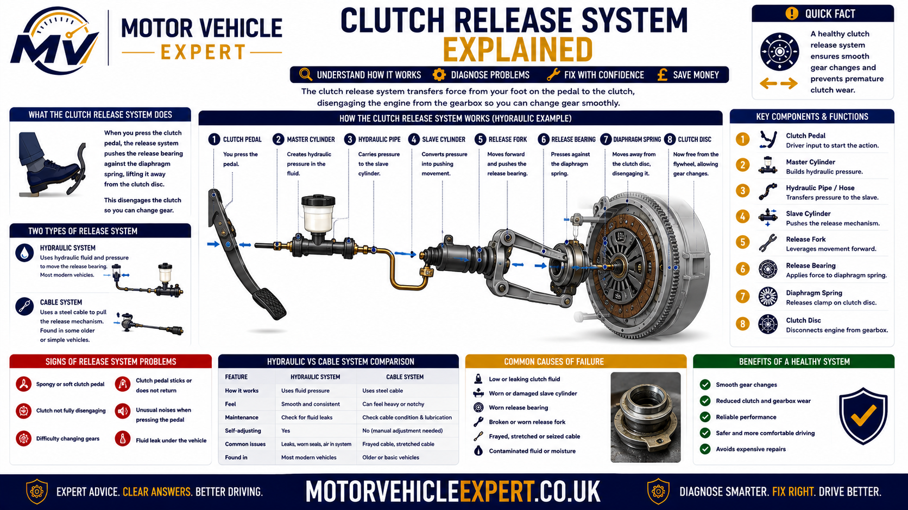
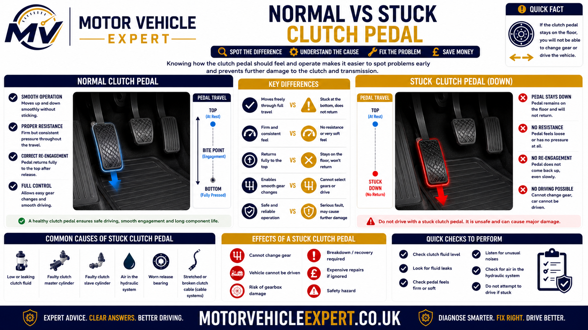
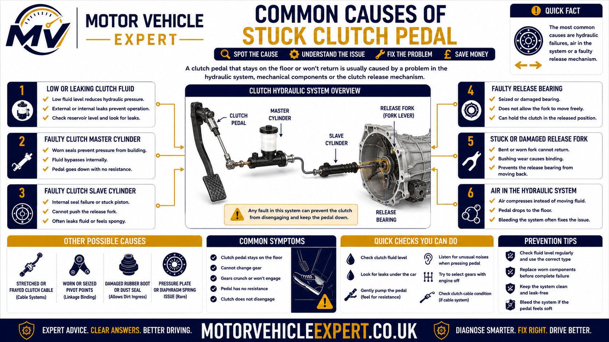
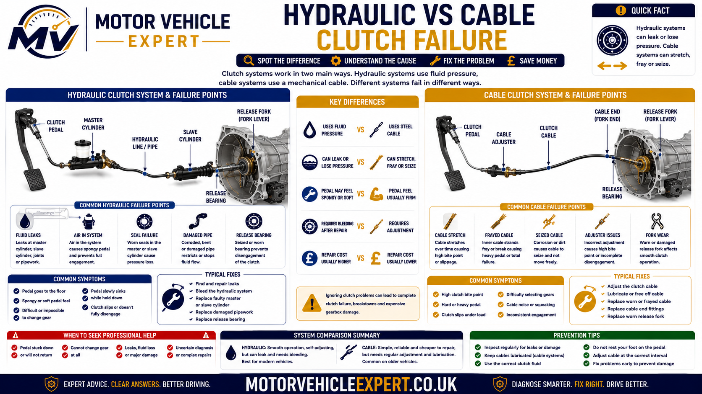
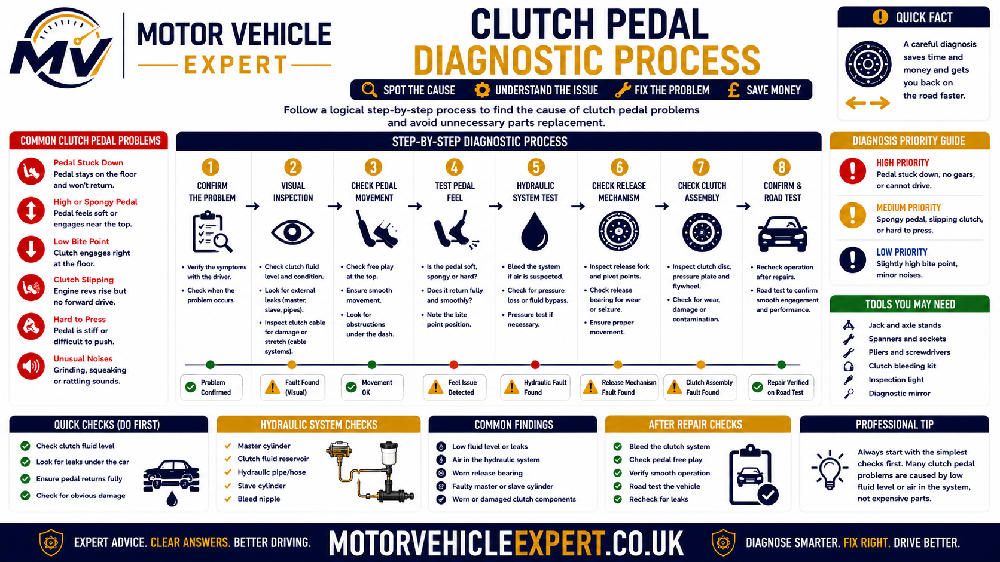
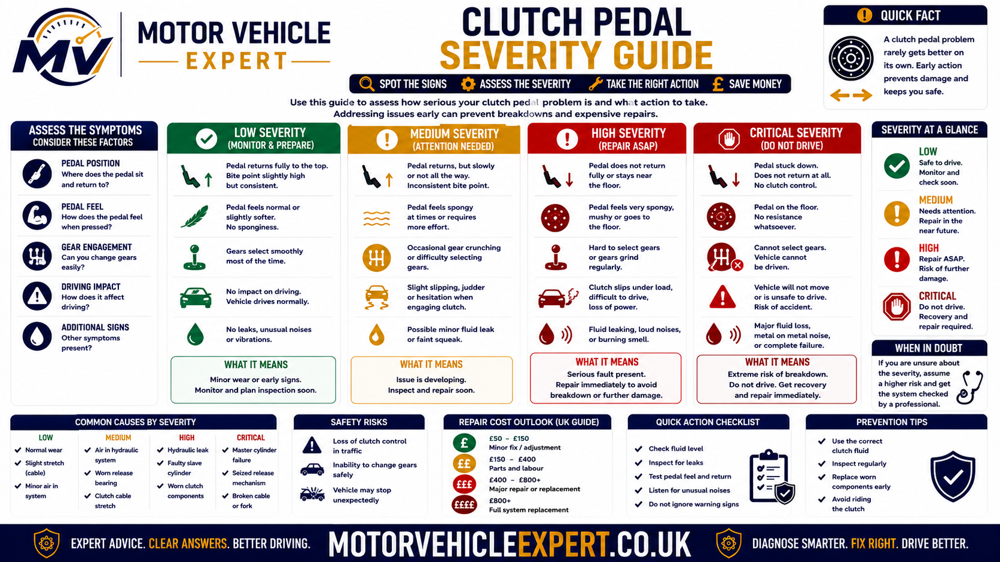
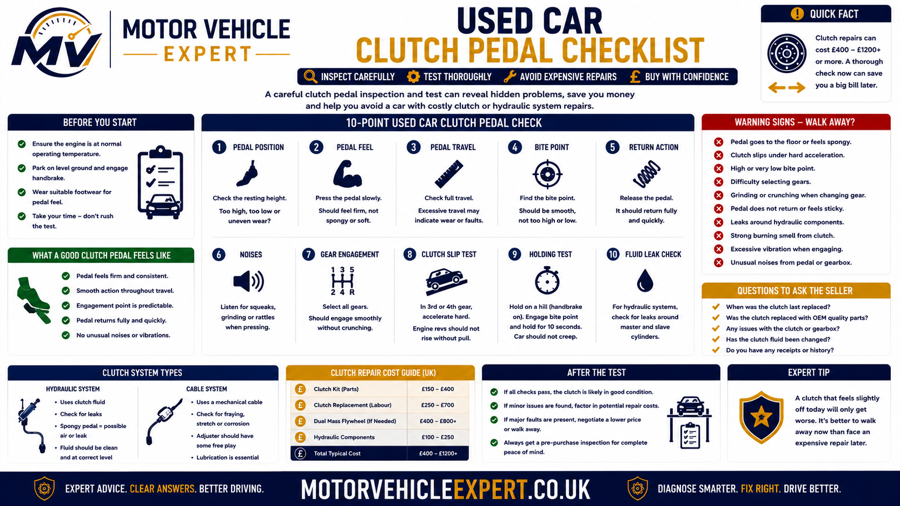
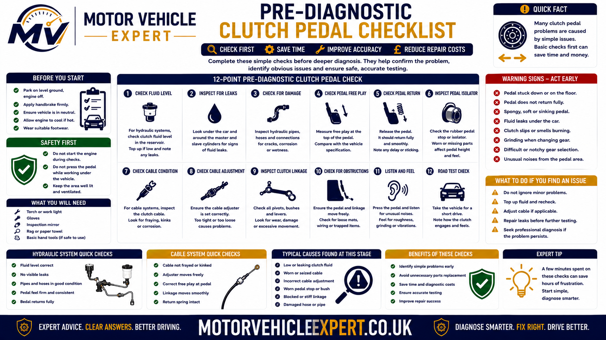

Use the Diagnostic App for a Clutch Pedal Stuck Down
A clutch pedal that remains down can result from a hydraulic leak, failed master or slave cylinder, broken cable, pedal-mechanism fault or internal clutch-release problem. The Motor Vehicle Expert diagnostic app can help organise the symptoms before parts are replaced.
1. Record the Pedal Behaviour
Note whether the pedal stays fully down, returns slowly, works after pumping or must be lifted by hand.
2. Identify the Clutch System
Establish whether the vehicle uses a mechanical cable or a hydraulic master-and-slave-cylinder system.
3. Check Related Evidence
Record fluid loss, pedal noise, difficult gear selection, visible cable damage and whether the fault changes when hot.
4. Judge the Safety Risk
Decide whether the clutch still operates consistently or whether recovery is required.
A pedal that has no resistance suggests a different fault from one that feels stiff, returns slowly or sticks only after the vehicle becomes hot.
Why Is My Clutch Pedal Stuck Down?
A clutch pedal normally returns after being released because the pedal spring, cable or hydraulic system and pressure-plate spring move the complete release mechanism back to its rest position.
If the pedal remains down, the return path has failed or become restricted. Common causes include a failed clutch master cylinder, leaking or sticking slave cylinder, hydraulic fluid loss, air in the system, restricted hose, broken clutch cable, failed pedal spring, seized pedal pivot, binding release fork, damaged release bearing or pressure-plate failure.
Pedal Down With Low Fluid
A leaking master cylinder, pipe, hose or slave cylinder is likely.
Pedal Has No Resistance
A broken cable, severe hydraulic pressure loss or detached linkage may be responsible.
Pedal Returns After Pumping
Air, fluid loss or internal cylinder bypass is likely.
Pedal Sticks When Hot
Hydraulic pressure retention, hose restriction or mechanical binding may worsen with temperature.
Typical Evidence
- ✓ Fluid level is low or falling.
- ✓ The pedal feels soft or inconsistent.
- ✓ Pumping the pedal restores pressure briefly.
- ✓ Fluid is visible near the pedal or gearbox.
- ✓ The fault changes with temperature.
- ✓ The vehicle uses a master and slave cylinder.
Typical Evidence
- ! The pedal dropped suddenly.
- ! No hydraulic fluid system is fitted.
- ! The cable is loose, snapped or detached.
- ! The pedal spring or quadrant is broken.
- ! Pedal movement feels rough or seized.
- ! The gearbox release arm does not return.
Diagnose the complete return path from the pedal to the pressure plate. The pedal itself may be functioning correctly while a cable, cylinder, hose, fork or release bearing prevents the mechanism returning.
The clutch may fail again during the next gear change. Do not rely on manually lifting or repeatedly pumping the pedal to continue driving.
Is a Clutch Pedal Stuck Down Serious?
Yes. A clutch pedal that stays down means the clutch operating system is no longer returning normally. The clutch may remain disengaged, partly disengaged or unable to disengage again when the driver needs to change gear.
The fault may begin as a slow pedal return or occasional sticking, but it can progress into complete hydraulic pressure loss, a broken cable, an internal release failure or an inability to select gears safely.
Pedal Returns Slowly
Early WarningThe pedal reaches its rest position eventually but feels slow, sticky or inconsistent.
Pedal Needs Lifting by Foot
Significant FaultA cable, hydraulic or pedal-return fault is preventing normal clutch operation.
Pedal Stays on the Floor
High RiskThe clutch may no longer engage or disengage reliably, making gear selection and vehicle control unpredictable.
Fluid Leak or No Gear Selection
UrgentContinued driving can leave the vehicle stuck in gear, unable to move or unable to stop without stalling.
Early Warning Signs
- ✓ The pedal returns more slowly than normal.
- ✓ Pedal resistance changes between gear changes.
- ✓ Pumping the pedal temporarily improves operation.
- ✓ The pedal occasionally remains part-way down.
- ✓ First or reverse gear becomes difficult to select.
- ✓ The fault becomes worse when the vehicle is hot.
Urgent Warning Signs
- ! The pedal remains fully on the floor.
- ! The vehicle is stuck in gear.
- ! Gears cannot be selected with the engine running.
- ! Hydraulic fluid is leaking rapidly.
- ! The clutch engages or disengages without warning.
- ! The pedal has dropped with no resistance.
- ! Grinding, cracking or severe release noise is present.
Pulling the pedal up or pumping it may restore operation for one or two gear changes, but the underlying cable, hydraulic or mechanical fault remains and can fail again immediately.
How the Clutch Release System Works
The clutch pedal does not act directly on the clutch friction plate. It moves a cable or hydraulic system that operates the release fork or concentric slave cylinder, which then moves the release bearing against the pressure-plate diaphragm spring.
When the pedal is released, each component must return freely. The pressure-plate spring restores clamping force, while the bearing, fork, slave cylinder, hydraulic fluid, master cylinder and pedal mechanism all return towards their normal rest positions.

A failure anywhere between the pedal and pressure plate can stop the pedal returning normally.
1. Driver Presses the Pedal
Pedal movement begins the clutch-release process.
2. Cable or Master Cylinder Moves
A mechanical cable pulls the release arm, or a master cylinder creates hydraulic pressure.
3. Slave Cylinder or Cable Acts
Movement reaches the gearbox release fork or integrated concentric release unit.
4. Release Bearing Moves
The bearing presses against the pressure-plate diaphragm spring.
5. Clamping Force Reduces
The pressure plate releases the clutch friction plate.
6. Engine and Gearbox Separate
Torque transfer is interrupted so the driver can select a gear.
7. Driver Releases the Pedal
Hydraulic pressure or cable tension must reduce immediately.
8. Entire System Returns
The pressure plate reclamps the clutch and the pedal returns to its rest position.
Clutch Pedal
Provides driver input and may use pivots, bushes, stops and assistance or return springs.
Master Cylinder
Converts pedal movement into hydraulic pressure on hydraulic clutch systems.
Hydraulic Pipe and Hose
Carry fluid pressure between the master and slave cylinders.
Clutch Cable
Transfers pedal movement mechanically on cable-operated systems.
Slave Cylinder
Converts hydraulic pressure back into mechanical release movement.
Release Fork
Acts as a lever between the cable or slave cylinder and the release bearing.
Release Bearing
Transfers movement into the rotating pressure-plate diaphragm spring.
Pressure Plate
Clamps or releases the friction plate against the flywheel.
Friction Plate
Transfers engine torque into the gearbox when clamped.
Flywheel
Provides the engine-side clutch friction surface.
Pedal Return Spring
Assists pedal movement but cannot overcome a seized release system.
Hydraulic Compensation Port
Allows pressure to return to the reservoir when the pedal is released.
| Failed return stage | Possible pedal result | Likely inspection area |
|---|---|---|
| Pedal pivot or spring | Pedal sticks or remains part-way down | Pedal bushes, bracket, stop and springs |
| Master-cylinder return | Pedal returns slowly or remains down | Piston, seals, pushrod and compensation port |
| Hydraulic pipe or hose | Pressure applies but returns slowly | Flexible hose restriction and damaged pipework |
| Slave cylinder | Pedal loses pressure or sticks | External or concentric slave-cylinder operation |
| Clutch cable | Pedal drops, sticks or has no resistance | Cable, adjuster, routing and end fittings |
| Release fork or bearing | Pedal feels rough, stiff or remains depressed | Fork, pivot, guide tube and release bearing |
| Pressure plate | Pedal movement becomes abnormal or locks | Diaphragm spring and clutch-cover condition |
Replacing a pedal spring will not correct a sticking slave cylinder, restricted hose, seized cable or collapsed release bearing. The complete operating path must be checked.
Normal vs Stuck Clutch Pedal
A healthy clutch pedal moves smoothly, provides consistent resistance and returns promptly after the driver removes pressure. A faulty pedal may stop at the floor, rise slowly, remain part-way down or return only after pumping or manual assistance.

The pedal feel, return speed and gear-selection effect help narrow the fault before parts are removed.
Expected Operation
- ✓ Pedal resistance remains consistent.
- ✓ Pedal movement is smooth.
- ✓ Pedal returns promptly after release.
- ✓ Rest height remains consistent.
- ✓ Gear selection is predictable.
- ✓ No hydraulic fluid is lost.
- ✓ Operation remains similar hot and cold.
Abnormal Operation
- ! Pedal remains on or near the floor.
- ! Pedal rises slowly or in stages.
- ! Pedal must be lifted manually.
- ! Resistance disappears suddenly.
- ! Pumping temporarily restores operation.
- ! Gear selection becomes difficult or impossible.
- ! Fluid leakage, noise or binding is present.
| Pedal behaviour | Likely fault direction | Immediate response |
|---|---|---|
| Pedal returns normally every time | Release operation currently appears normal | Continue checking related symptoms |
| Pedal returns slowly | Hydraulic restriction, cable or pivot binding | Arrange prompt inspection |
| Pedal stays down but can be lifted | Return spring, cylinder, cable or release fault | Do not rely on manual lifting |
| Pedal drops with no resistance | Hydraulic pressure loss or broken cable | Stop and inspect before driving |
| Pedal improves after pumping | Air, leakage or internal cylinder bypass | Locate the hydraulic fault |
| Pedal becomes stuck when hot | Pressure retention or heat-related binding | Test the system cold and hot |
| Pedal is down and gears cannot be selected | Serious clutch-release failure | Arrange recovery |
“The clutch does not work” is less useful than recording whether the pedal is soft, stiff, slow, completely loose, temperature dependent or restored temporarily by pumping.
Common Symptoms of a Clutch Pedal Stuck Down
Pedal failure often develops alongside gear-selection problems, changing resistance, hydraulic fluid loss or abnormal noises. The combination of symptoms helps distinguish a hydraulic failure from a broken cable or internal release fault.
Pedal Remains on the Floor
The pedal fails to return after the driver removes their foot.
Pedal Returns Slowly
The pedal rises gradually rather than returning immediately.
Pedal Must Be Lifted
The driver has to hook a foot under the pedal or lift it by hand.
No Pedal Resistance
The pedal falls easily because cable tension or hydraulic pressure has been lost.
Very Heavy Pedal
A seized cable, pedal pivot, release bearing or pressure-plate fault may resist movement.
Pedal Works After Pumping
Repeated strokes temporarily restore hydraulic pressure.
Difficult First Gear
The clutch may not disengage fully, leaving torque applied to the gearbox input shaft.
Difficult Reverse Gear
Reverse may grind or resist selection because it often lacks full synchronisation.
Vehicle Creeps With Pedal Down
Incomplete clutch release allows the car to move despite the pedal being depressed.
Engine Stalls When Stopping
The clutch may remain engaged as the vehicle slows to a halt.
Fluid Level Falls
A leak may be present at the master cylinder, pipe, hose or slave cylinder.
Fluid Inside the Footwell
Dampness around the clutch pedal can indicate master-cylinder leakage.
Fluid Near the Gearbox
Leakage around the bellhousing may indicate an external or concentric slave-cylinder fault.
Pedal Squeak or Click
Pedal bushes, springs, cable parts or mounting points may be worn.
Grinding or Rumbling
Release-bearing or pressure-plate damage may be present.
Fault Appears When Hot
Hydraulic pressure retention or mechanical binding may worsen as the system heats.
Intermittent Operation
The pedal may operate normally for several changes before sticking again.
Sudden Failure After a Noise
A cable, spring, fork, bearing or pressure-plate component may have broken.
Forcing gear selection can damage synchromesh components, shift linkages and gearbox teeth. Stop the engine and arrange inspection or recovery.
Why Does the Clutch Pedal Stay on the Floor?
A pedal that remains fully down indicates that the normal return force is not reaching the pedal or cannot overcome resistance in the operating system.
The exact cause depends on whether the pedal feels loose, soft, stiff or mechanically jammed. Hydraulic pressure loss creates a different pattern from a seized cable or collapsed release bearing.
Hydraulic Pressure Loss
Fluid leakage or cylinder failure prevents pressure from transferring correctly.
Master Cylinder Sticks
The piston or internal seals fail to return to the rest position.
Slave Cylinder Sticks
The slave piston or concentric release unit remains extended.
Broken Clutch Cable
Mechanical connection between the pedal and release arm is lost.
Failed Pedal Spring
A broken or detached spring reduces pedal-return assistance.
Pedal Pivot Seizes
Corrosion, damaged bushes or bracket distortion prevents free pedal movement.
Release Fork Jams
A bent, cracked or seized fork can lock the release mechanism.
Release Bearing Collapses
Bearing damage can jam against its guide or the pressure plate.
Pressure-Plate Failure
Broken or displaced diaphragm fingers can prevent normal release and return.
| Pedal feel while down | Possible cause | Diagnostic priority |
|---|---|---|
| Loose with almost no resistance | Broken cable or major hydraulic pressure loss | Inspect cable connection and fluid leakage |
| Soft and improves after pumping | Air, leak or cylinder bypass | Pressure-test and bleed the hydraulic system |
| Heavy and mechanically stuck | Cable, pivot, fork or bearing seizure | Inspect mechanical movement before further use |
| Normal pressure but no return | Master cylinder, hose or release binding | Check residual pressure and return travel |
| Failure followed a crack or snap | Cable, spring, fork or pressure-plate breakage | Inspect for detached or broken components |
| Pedal stays down only when hot | Hydraulic restriction or heat-related seizure | Compare cold and hot operation |
The next pedal application may leave the vehicle unable to change gear, stop without stalling or move safely from a junction.
Why Does the Clutch Pedal Return Slowly?
A slow-returning pedal often indicates that pressure or mechanical movement is returning through the system too slowly. This may be an early stage of the same fault that eventually leaves the pedal on the floor.
Restricted Hydraulic Hose
A damaged inner lining may allow pressure to apply but delay fluid return.
Master-Cylinder Binding
The piston or seals drag inside the cylinder bore.
Slave-Cylinder Binding
Corrosion or seal damage slows the return stroke.
Pedal Pivot Friction
Worn, dry or distorted pedal hardware resists movement.
Clutch Cable Corrosion
Internal cable friction delays release-arm and pedal return.
Release-Bearing Resistance
The bearing binds on its guide or against damaged diaphragm fingers.
Weak Return Spring
The pedal spring no longer assists the mechanism effectively.
Incorrect Pushrod Adjustment
The master cylinder cannot uncover its compensation port fully.
Heat Expansion
Temperature can increase pressure or mechanical binding.
Do not wait for the pedal to remain down completely. Early diagnosis may prevent clutch overheating, gearbox-removal labour or a breakdown in traffic.
Why Does Pumping the Clutch Pedal Make It Work?
Pumping can temporarily move more fluid or rebuild hydraulic pressure when air, leakage or internal cylinder bypass prevents one normal pedal stroke from operating the clutch correctly.
Air in the System
Repeated strokes compress and move trapped air, temporarily increasing slave-cylinder travel.
Low Fluid Level
Pumping may briefly move the remaining fluid, but more air can enter the circuit.
Master-Cylinder Bypass
Worn internal seals may build more pressure through repeated strokes.
Slave-Cylinder Leakage
Temporary pressure may overcome minor leakage before failing again.
Flexible Hose Expansion
A weakened hose can absorb part of the pedal pressure.
Changing Hydraulic Temperature
Pressure response may alter as fluid and seals heat.
The pedal can lose pressure again during the next junction, gear change or hill start. Locate the leak or failed hydraulic component before the vehicle is driven normally.
Why Does a Stuck Clutch Pedal Make Gears Difficult to Select?
Pressing the clutch pedal should separate the engine from the gearbox input shaft. If the release system does not move far enough, the input shaft continues rotating and loads the gearbox synchronisers and gear teeth.
First Gear Resists Selection
The gearbox input shaft remains loaded while the vehicle is stationary.
Reverse Gear Grinds
Reverse often lacks full synchromesh and exposes incomplete clutch release clearly.
Vehicle Creeps Forward
Torque continues passing through the clutch despite the pedal being pressed.
Engine Stalls at Junctions
The clutch remains engaged as road speed falls to zero.
Gear Lever Feels Locked
Drivetrain torque prevents the selector mechanism moving freely.
Selection Improves With Engine Off
This strongly supports clutch drag rather than an internal gearbox-selection fault.
| Gear-selection result | Possible meaning | Recommended response |
|---|---|---|
| Gears select normally with engine off only | Clutch is not disengaging fully | Inspect release travel and hydraulic or cable operation |
| Only reverse grinds | Early incomplete release possible | Check pedal travel before gearbox damage develops |
| Vehicle creeps with pedal down | Significant clutch drag | Stop driving and repair the release fault |
| Gears remain difficult with engine off | Linkage or gearbox fault also possible | Inspect the selector system separately |
| Pedal stays down and car remains in gear | Serious release-system failure | Switch off safely and arrange recovery |
Synchromesh rings, selector forks, linkage parts and gear teeth can be damaged if the driver repeatedly forces selection while the clutch is still transmitting torque.
Where Can Clutch Hydraulic Fluid Leak?
Hydraulic fluid loss reduces clutch-release pressure and allows air into the system. The leak may be visible around the pedal, along the pipework, at an external slave cylinder or inside the bellhousing.
Master Cylinder
Fluid may appear around the pushrod, pedal bracket, footwell or engine-bay bulkhead.
Reservoir Connection
Seals, hoses and fittings between the reservoir and master cylinder can leak.
Rigid Hydraulic Pipe
Corrosion, impact damage or damaged unions can allow fluid loss.
Flexible Hydraulic Hose
Cracks, swelling or failed crimp joints may leak externally.
External Slave Cylinder
Fluid may collect around the gearbox casing, dust boot or release arm.
Concentric Slave Cylinder
Fluid can leak inside the bellhousing and contaminate the clutch friction surfaces.
Look for...
- ✓ Falling reservoir level.
- ✓ Dampness around the clutch pedal.
- ✓ Wet pipe or hose connections.
- ✓ Fluid around an external slave cylinder.
- ✓ Drips beneath the engine or gearbox area.
Look for...
- ! Fluid emerging from the bellhousing.
- ! Pedal pressure disappearing repeatedly.
- ! No obvious external cylinder leak.
- ! Clutch slip or judder after fluid loss.
- ! Burning smell from contaminated friction material.
Fluid can be lost suddenly, and a concentric slave-cylinder leak may contaminate the clutch. Repair the source and bleed the system correctly.
Common Causes of a Clutch Pedal Stuck Down
A clutch pedal can remain down because pressure has been lost, hydraulic fluid cannot return, a mechanical connection has broken or an internal release component has seized. The pedal feel and related symptoms help identify the most likely area.

External pedal, cable and hydraulic checks should be completed before gearbox removal is authorised.
Failed Master Cylinder
Internal seals, piston binding or a broken return spring can prevent pressure generation or pedal return.
Leaking Slave Cylinder
Fluid loss reduces release movement and allows air into the hydraulic system.
Sticking Slave Cylinder
Corrosion or seal damage can leave the cylinder extended and the pedal depressed.
Restricted Hydraulic Hose
A damaged inner lining may allow pressure through in one direction but delay its return.
Hydraulic Fluid Loss
Leakage at a cylinder, pipe, union or hose removes the fluid required to transfer pedal force.
Air in the Hydraulic System
Compressible air produces a soft, inconsistent pedal and reduced slave-cylinder movement.
Blocked Compensation Port
Hydraulic pressure cannot return freely to the reservoir after the pedal is released.
Incorrect Master Pushrod Adjustment
Insufficient free play can prevent the master cylinder reaching its hydraulic rest position.
Broken Clutch Cable
A snapped cable removes the mechanical connection between the pedal and gearbox release arm.
Seized Clutch Cable
Corrosion, broken strands or damaged casing can prevent the cable sliding back freely.
Failed Cable Adjuster
A broken ratchet, quadrant or automatic adjuster can release cable tension suddenly.
Detached Cable End
A failed retaining clip or damaged fitting can disconnect the cable from the pedal or release arm.
Broken Pedal Return Spring
The pedal loses return assistance and may stay below its normal rest position.
Seized Pedal Pivot
Corrosion, worn bushes or bracket distortion can restrict pedal movement.
Cracked Pedal Bracket
Flexing or displaced metal can absorb movement and misalign the cable or master-cylinder pushrod.
Binding Release Fork
A seized pivot, damaged guide or distorted fork can lock the release mechanism.
Collapsed Release Bearing
Bearing failure can create severe resistance or jam against the pressure plate.
Pressure-Plate Failure
Broken diaphragm fingers or clutch-cover damage can stop the release system returning.
Incorrect Clutch Installation
Wrong components, incorrect bearing location or assembly error can cause immediate pedal-return problems.
Bellhousing Misalignment
Missing alignment dowels or incorrect gearbox installation can make release components bind.
Debris or Corrosion
Contamination around pedal, cable or external release parts can restrict movement.
| Symptom pattern | More likely cause | First inspection |
|---|---|---|
| Soft pedal with falling fluid level | Hydraulic leakage | Master cylinder, pipe, hose and slave cylinder |
| Pedal improves after pumping | Air, internal bypass or fluid loss | Hydraulic pressure and leak test |
| Pedal dropped suddenly with no resistance | Broken cable or major hydraulic failure | Cable connections and fluid system |
| Pedal is very heavy and remains down | Mechanical binding or internal release failure | Pedal, cable, fork and bearing movement |
| Pedal sticks only when hot | Hydraulic restriction or heat-related binding | Cold and hot return-pressure comparison |
| Fault began after clutch replacement | Installation, bearing, fork or hydraulic issue | Review parts and fitting procedure |
| Fluid emerges from bellhousing | Concentric slave-cylinder failure | Gearbox removal and contamination assessment |
A soft pedal suggests pressure loss, a loose pedal suggests a disconnected cable or linkage, and a heavy pedal suggests mechanical resistance in the cable or internal release system.
Clutch Master-Cylinder Faults
The clutch master cylinder converts pedal movement into hydraulic pressure. It must build pressure when the pedal is pressed and return fully when the pedal is released.
Internal seal failure may produce no obvious external fluid leak. The pedal can sink, remain down or work temporarily after pumping because fluid bypasses the piston inside the cylinder.
Internal Seal Bypass
Fluid moves past worn seals instead of being forced towards the slave cylinder.
Piston Binding
Corrosion, contamination or bore damage prevents the piston returning smoothly.
Broken Internal Spring
The master-cylinder piston loses part of its return force.
External Pushrod Leak
Fluid may appear around the clutch pedal, carpet or bulkhead.
Blocked Compensation Port
Pressure cannot return to the reservoir when the pedal is released.
Incorrect Pushrod Free Play
A pushrod held too far forward can keep the compensation port closed.
Loose Cylinder Mounting
Bulkhead or bracket movement absorbs pedal travel.
Reservoir Feed Restriction
A blocked hose or seal prevents the cylinder receiving fluid correctly.
Incorrect Replacement Cylinder
Wrong bore size or pushrod length can alter travel and pressure.
Supporting Evidence
- ✓ Pedal sinks under steady pressure.
- ✓ Pumping temporarily restores pedal pressure.
- ✓ Fluid appears around the pedal pushrod.
- ✓ Slave-cylinder movement is inconsistent.
- ✓ No broken cable is fitted or visible.
- ✓ The piston does not return fully.
Do Not Overlook...
- ! A restricted hydraulic hose.
- ! A leaking or sticking slave cylinder.
- ! Pedal-bracket or pushrod misalignment.
- ! Air entering through another leak.
- ! Internal release-bearing resistance.
- ! Incorrect bleeding procedure.
Internal bypass may allow the pedal to sink while the reservoir level remains unchanged. Pressure testing and cylinder movement are therefore important.
Clutch Slave-Cylinder Faults
The slave cylinder converts hydraulic pressure into the mechanical movement needed to release the clutch. It may be mounted externally on the gearbox or positioned inside the bellhousing as a concentric slave cylinder.
External Seal Leak
Fluid appears around the slave-cylinder body, dust boot or gearbox casing.
Internal Seal Bypass
The piston fails to hold pressure even without a large visible leak.
Piston Seizure
Corrosion or bore damage prevents the piston moving or returning freely.
Over-Extended Piston
Incorrect release geometry can push the cylinder beyond its intended travel.
Broken Return Spring
Where fitted, spring failure can reduce cylinder return.
Loose Mounting
Movement at the gearbox mounting reduces effective release-arm travel.
Concentric Seal Failure
Fluid leaks inside the bellhousing and may soak the clutch friction plate.
Concentric Bearing Seizure
The combined slave cylinder and release bearing can bind on its guide.
Incorrect Slave Cylinder
Wrong piston diameter or travel can create poor release movement.
| Slave-cylinder finding | Likely effect | Repair direction |
|---|---|---|
| External cylinder is visibly leaking | Pressure loss and soft pedal | Replace the cylinder and bleed the system |
| External piston moves but does not return | Binding cylinder or retained pressure | Separate cylinder binding from hose restriction |
| Fluid leaks from bellhousing | Concentric slave-cylinder failure | Remove gearbox and assess clutch contamination |
| Pedal pressure falls with no external leak | Internal master or slave bypass | Pressure-test both cylinders |
| New slave over-extends | Incorrect geometry or installation | Check clutch, fork and component compatibility |
| Pedal is heavy and bearing noise is present | Concentric bearing or pressure-plate fault | Internal clutch inspection may be required |
Hydraulic fluid inside the bellhousing can contaminate the friction plate, causing clutch slip, judder and burning smell. The clutch and flywheel must be inspected during repair.
Clutch Hydraulic Hose and Pipe Faults
The hydraulic line must transfer pressure quickly in both directions. External leakage is easy to recognise, but an internally damaged flexible hose can restrict return flow without showing an obvious leak.
External Hose Leak
Cracks, worn surfaces or failed crimp joints allow fluid to escape.
Internal Hose Collapse
A loose inner lining can behave like a one-way valve and trap pressure.
Hose Swelling
Pressure expands a weakened hose instead of moving the slave cylinder effectively.
Corroded Rigid Pipe
Rust can weaken the pipe until a pinhole leak develops.
Damaged Pipe Union
Cross-threading, poor seating or damaged seals can allow fluid loss and air entry.
Kinked Pipework
Incorrect routing or accident damage can restrict hydraulic flow.
Heat-Damaged Hose
Exhaust or engine heat can soften, harden or weaken hydraulic material.
Incorrect Replacement Line
Wrong internal diameter or fittings can affect flow and bleeding.
Connector Retaining Failure
A quick-release clip or seal can detach and cause sudden fluid loss.
Typical Evidence
- ✓ Pedal applies normally but returns slowly.
- ✓ The fault worsens as temperature rises.
- ✓ Slave-cylinder pressure remains after pedal release.
- ✓ Opening the hydraulic circuit releases trapped pressure.
- ✓ No major external leakage is visible.
Typical Evidence
- ! Fluid level falls.
- ! Wetness appears along the pipe or hose.
- ! Pedal pressure becomes soft or disappears.
- ! Air repeatedly enters after bleeding.
- ! A fitting or connector moves under pressure.
Pressure and return-flow tests may be required where the clutch releases but the pedal or slave cylinder returns slowly.
Air in the Clutch System and Hydraulic Fluid Loss
Hydraulic fluid is designed to transfer pedal force with very little compression. Air compresses under pressure, reducing the movement reaching the slave cylinder and making the pedal feel soft, springy or inconsistent.
Air normally enters because fluid has leaked, the reservoir has run low or the system was opened during repair. Bleeding without correcting the source may restore operation only temporarily.
Low Reservoir Level
The master cylinder can draw air when fluid falls below the feed port.
Master-Cylinder Leak
Fluid loss or internal seal failure prevents consistent hydraulic pressure.
Slave-Cylinder Leak
Fluid escapes during pedal use and air enters as pressure falls.
Pipe or Hose Leak
Damaged hydraulic lines allow fluid out and air into the circuit.
Incomplete Bleeding
Air remains trapped at high points, unions or inside a concentric slave cylinder.
Incorrect Bleeding Method
Some systems require pressure, vacuum or manufacturer-specific bleeding procedures.
Reservoir Shared With Brakes
The clutch feed may sit above the brake feed so clutch operation fails first as fluid falls.
Incorrect Fluid
Wrong fluid can damage seals and create further hydraulic failure.
Contaminated Fluid
Water, dirt, oil or degraded rubber can affect cylinder and valve operation.
| Hydraulic symptom | Possible explanation | Correct response |
|---|---|---|
| Pedal feels spongy | Air in the hydraulic circuit | Find the entry point and bleed correctly |
| Pedal improves after pumping | Air, leakage or internal bypass | Pressure-test cylinders and pipework |
| Fluid falls after bleeding | An active leak remains | Locate and repair the leak |
| Air repeatedly returns | Leak, poor connection or incorrect bleeding | Inspect unions and follow the correct procedure |
| Fluid is dark or contaminated | Age, moisture or seal deterioration | Repair faults and renew the correct fluid |
| Clutch fails but brake level appears acceptable | Shared reservoir clutch feed uncovered first | Inspect for clutch-side leakage immediately |
Use only the specification stated for the vehicle. Incorrect fluid can swell seals, damage cylinders and create a larger repair.
Clutch Cable Faults That Leave the Pedal Down
Cable-operated clutches connect the pedal mechanically to the gearbox release arm. A snapped cable can leave the pedal loose, while corrosion, broken strands or poor routing can make the pedal heavy and prevent its return.
Snapped Inner Cable
Pedal resistance disappears because force no longer reaches the release arm.
Frayed Cable Strands
Broken strands catch inside the casing and make movement rough or intermittent.
Seized Inner Cable
Corrosion or lost lubrication prevents the cable sliding back.
Collapsed Outer Casing
The casing deforms under pedal load and absorbs cable travel.
Incorrect Cable Routing
Tight bends and heat exposure increase friction and damage.
Detached Pedal End
A failed clip, hook or quadrant disconnects the cable.
Detached Gearbox End
The cable separates from the release arm or mounting bracket.
Failed Automatic Adjuster
A ratchet or quadrant may release suddenly or jam.
Incorrect Manual Adjustment
Excess tension or slack can create poor release and abnormal pedal position.
Wrong Replacement Cable
Incorrect length or fittings prevent normal movement and adjustment.
Damaged Bulkhead Mount
The cable casing moves instead of transmitting full pedal travel.
Binding Release Arm
The cable may be serviceable while the gearbox lever prevents return.
Typical Evidence
- ✓ Pedal drops suddenly.
- ✓ Little or no pedal resistance remains.
- ✓ Cable movement is absent at the gearbox.
- ✓ Frayed or detached cable parts are visible.
- ✓ No hydraulic reservoir or cylinders are fitted.
Typical Evidence
- ! Pedal becomes progressively heavier.
- ! Movement feels rough or notchy.
- ! Pedal returns slowly or remains part-way down.
- ! Cable casing is cracked, melted or corroded.
- ! Release arm returns when the cable is disconnected.
A partially failed cable can snap without warning, leaving the vehicle unable to disengage the clutch.
Clutch Pedal Spring, Pivot and Bracket Faults
The pedal assembly provides leverage and controls the starting point of cable or hydraulic movement. Worn bushes, fractured brackets and failed springs can stop the pedal returning even when the clutch itself remains serviceable.
Broken Return Spring
The pedal loses the spring force that assists return to its rest position.
Detached Spring
A spring may remain intact but separate from its mounting.
Weak Assistance Spring
Fatigue or incorrect installation changes pedal effort and return behaviour.
Seized Pedal Pivot
Corrosion or dry bushes create excessive friction.
Worn Pedal Bushes
Sideways movement misaligns the cable or master-cylinder pushrod.
Cracked Pedal Arm
The pedal flexes instead of transmitting its full movement.
Cracked Mounting Bracket
The support structure moves under load and alters pedal geometry.
Bulkhead Flex
Metal fatigue around a cable or master-cylinder mounting absorbs travel.
Incorrect Pedal Stop
A missing or misadjusted stop can alter pushrod movement and rest position.
Pushrod Clevis Wear
Worn pins and holes create lost motion or allow the linkage to detach.
Floor-Mat Obstruction
A loose or thick mat can block full pedal movement or return.
Incorrect Reassembly
Springs, spacers or clips fitted incorrectly can cause binding after repair.
A healthy spring may be unable to return a seized cable, sticking hydraulic cylinder or collapsed release bearing. Check the resistance throughout the system.
Can a Release Fork Cause the Clutch Pedal to Stay Down?
Yes. The release fork transfers cable or slave-cylinder movement to the release bearing. Wear, cracking or seizure can prevent the fork moving or returning correctly.
Fork Pivot Seizure
Corrosion or lack of lubrication prevents smooth lever movement.
Worn Pivot Ball
Excess wear changes leverage and release-bearing alignment.
Cracked Release Fork
The fork bends or breaks instead of moving the bearing.
Bent Release Fork
Distortion alters travel and may cause the fork to contact the bellhousing.
Fork Retaining Clip Failure
The fork or bearing separates from its correct operating position.
Worn Bearing Contact Points
Grooves in the fork arms affect release-bearing movement.
Bellhousing Interference
Incorrect components or distortion cause the fork to bind.
Incorrect Fork Installation
Mislocated clips or pivot seating can create immediate pedal faults after repair.
External Arm Corrosion
Where the shaft passes through the bellhousing, corrosion can restrict rotation.
Observing whether the release arm moves and returns can separate cable or slave-cylinder faults from internal fork resistance.
Can a Release Bearing Cause a Stuck Clutch Pedal?
A release bearing must slide smoothly while rotating against the pressure-plate diaphragm spring. Bearing seizure, guide damage or incorrect installation can create enough resistance to hold the pedal down.
Bearing Seizure
Internal bearing damage creates severe resistance and noise.
Bearing Collapse
The bearing separates or deforms and jams within the release mechanism.
Guide-Tube Corrosion
Rust or scoring prevents the bearing sliding freely.
Damaged Guide Tube
Cracking, wear or deformation causes misalignment.
Incorrect Bearing Height
The wrong bearing may over-travel or hold pressure against the clutch cover.
Bearing Installed Incorrectly
Clips or locating features may not be engaged with the fork.
Insufficient Lubrication
Incorrectly prepared guide surfaces can cause sliding resistance.
Excess or Wrong Lubricant
Contamination can attract debris or reach clutch friction surfaces.
Diaphragm-Finger Damage
Uneven or broken fingers can trap or misalign the bearing.
Once the gearbox is removed, inspect the clutch kit, guide, release fork, pressure plate and flywheel so the complete cause is corrected.
Pressure-Plate Faults and a Stuck Clutch Pedal
The pressure-plate diaphragm spring provides much of the force that returns the release mechanism. Broken, distorted or displaced diaphragm fingers can alter pedal resistance and prevent normal return.
Broken Diaphragm Fingers
Fractured fingers can jam the release bearing or remove return force.
Uneven Finger Height
Wear or distortion causes inconsistent bearing contact.
Collapsed Diaphragm Spring
Spring failure can produce sudden abnormal pedal movement.
Pressure-Plate Distortion
Heat or incorrect tightening changes clutch-cover geometry.
Loose Pressure-Plate Fasteners
Incorrect torque or assembly can allow movement and damage.
Self-Adjusting Mechanism Fault
An incorrectly reset or damaged adjuster alters diaphragm position.
Incorrect Pressure Plate
Wrong cover height or spring geometry creates abnormal release travel.
Over-Travel Damage
Excessive slave-cylinder or cable movement can push the diaphragm beyond its intended range.
Heat-Damaged Clutch Cover
Severe clutch slip can weaken or distort internal components.
A pressure-plate, fork, bearing or cable component may have broken. Avoid further pedal operation and arrange recovery.
Hydraulic vs Cable Clutch-Pedal Failure
Hydraulic and cable clutches can both leave the pedal down, but their supporting evidence differs. Hydraulic systems involve fluid pressure, cylinders and hoses, while cable systems rely on a mechanical inner cable, casing and adjuster.

Correctly identifying the operating system prevents unnecessary parts replacement and unsafe adjustment.
Typical Failure Evidence
- ✓ Brake or clutch-fluid reservoir is fitted.
- ✓ Pedal feels soft or spongy.
- ✓ Pumping may restore pressure briefly.
- ✓ Fluid level may fall.
- ✓ Fluid can appear near the pedal or gearbox.
- ✓ Temperature can alter pressure return.
- ✓ Master, hose or slave cylinder may fail.
Typical Failure Evidence
- ✓ No clutch hydraulic circuit is fitted.
- ✓ Pedal may drop suddenly after a snap.
- ✓ Cable strands or casing damage may be visible.
- ✓ Pedal may become heavy before failure.
- ✓ Automatic adjuster or quadrant may fail.
- ✓ Pedal and release-arm movement can be compared directly.
- ✓ Fluid loss is not part of the fault.
| Comparison point | Hydraulic system | Cable system |
|---|---|---|
| Force transfer | Hydraulic fluid pressure | Mechanical cable pull |
| Sudden loose pedal | Major fluid loss or cylinder failure | Broken or detached cable |
| Soft pedal | Air, leakage or internal bypass | Less typical |
| Heavy pedal | Internal release resistance possible | Seized cable or release arm common |
| Works after pumping | Common with hydraulic faults | Not normally improved by pumping |
| Visible evidence | Fluid leaks and falling reservoir level | Frayed cable, damaged casing or detached end |
| Temperature-related sticking | Hose restriction or pressure retention | Cable or release mechanism may bind when hot |
| Typical external repair | Master, hose or external slave cylinder | Cable, quadrant or pedal hardware |
| Possible internal repair | Concentric slave cylinder or release bearing | Fork, bearing or pressure-plate repair |
Arbitrary pushrod adjustment can block hydraulic compensation, retain pressure and damage the clutch release system.
Clutch Pedal Stuck-Down Diagnostic Process
Diagnosis should begin at the pedal and follow the complete operating path towards the clutch. External pedal, cable and hydraulic checks can often identify the fault before gearbox removal is considered.

The workflow separates external pedal, cable and hydraulic faults from internal release-bearing, fork and pressure-plate failures.
1. Record the Failure Pattern
Establish whether the pedal is soft, loose, heavy, slow, temperature dependent or restored by pumping.
2. Confirm the Vehicle Is Safe
Do not road-test where the pedal remains down or gears cannot be selected predictably.
3. Identify Cable or Hydraulics
Confirm which operating system is fitted before adjustment or bleeding is attempted.
4. Remove Pedal Obstructions
Check floor mats, trim and pedal stops for restricted movement.
5. Inspect Pedal Hardware
Check springs, pivots, bushes, brackets, clevis pins and mounting points.
6. Check Pedal Return by Hand
Assess whether the pedal itself binds independently of the cable or master cylinder.
7. Check Hydraulic Fluid
Inspect level, condition and evidence of leakage at the pedal, pipework and gearbox.
8. Test Master-Cylinder Operation
Check piston return, internal bypass, pushrod free play and compensation-port operation.
9. Inspect Hose and Pipework
Look for external leakage, swelling, kinks and return-flow restriction.
10. Check Slave-Cylinder Movement
Measure application and return travel where an external cylinder is fitted.
11. Check for Residual Pressure
Determine whether hydraulic pressure remains after the pedal is released.
12. Inspect Cable Operation
Check cable continuity, casing, adjuster, routing and gearbox- arm return on cable systems.
13. Compare External Release Movement
Observe whether the cable or slave cylinder moves the release arm and whether the arm returns.
14. Bleed Only After Leak Checks
Use the correct fluid and procedure after the system has been confirmed leak-free.
15. Remove the Gearbox if Justified
Inspect the release bearing, guide, fork, pressure plate, clutch and internal slave cylinder.
16. Verify the Complete Repair
Confirm pedal return, gear selection, release travel and consistent operation hot and cold.
| Diagnostic result | Likely fault direction | Next action |
|---|---|---|
| Pedal binds after disconnecting the operating system | Pedal pivot, spring or bracket fault | Repair the pedal assembly |
| Hydraulic fluid is low or leaking | Master, pipe, hose or slave-cylinder fault | Repair the leak and bleed correctly |
| Pedal sinks with no external leak | Internal master or slave-cylinder bypass | Pressure-test the hydraulic cylinders |
| Pressure remains after pedal release | Blocked compensation port or restricted hose | Isolate the master cylinder and hose |
| Cable does not move the release arm | Broken, detached or failed cable adjuster | Repair the cable and pedal connection |
| Release arm moves but does not return | Fork, bearing or pressure-plate resistance | Inspect internal clutch-release parts |
| Fluid leaks from the bellhousing | Concentric slave-cylinder failure | Remove gearbox and assess contamination |
| All external parts operate but pedal still jams | Internal bearing, fork or pressure-plate fault | Authorise gearbox removal with evidence |
Find the source of fluid loss or air entry first. Otherwise, the pedal may improve temporarily before failing again.
Pedal movement, master-cylinder output, slave-cylinder travel and release-arm return help identify where force is being lost or trapped.
Safe Checks for a Clutch Pedal That Stays Down
Safe owner checks are limited to visible pedal, fluid and external component observations. Do not drive the vehicle or work beneath it where clutch operation is unreliable.
1. Park Safely
Switch off the engine, apply the parking brake and select neutral where possible.
2. Remove Floor-Mat Obstruction
Check that the pedal is not trapped by a loose mat, trim or object.
3. Observe the Pedal Position
Record whether it is fully down, part-way down or slowly returning.
4. Note the Pedal Feel
Describe the pedal as soft, loose, heavy, rough or springy.
5. Check Fluid Level
Inspect the correct reservoir without adding unknown fluid.
6. Inspect Around the Pedal
Look for dampness, broken springs, detached linkage or bracket movement.
7. Look for External Leakage
Check visible pipes, hoses and the gearbox area from a safe position.
8. Record Recent Repairs
Note clutch, gearbox, pedal, cable or hydraulic work completed before the fault appeared.
You Can Check...
- ✓ Whether the pedal is physically obstructed.
- ✓ Whether the pedal spring appears detached.
- ✓ Whether fluid level is low.
- ✓ Whether fluid is visible in the footwell.
- ✓ Whether a cable appears broken or detached.
- ✓ Whether the fault started suddenly or gradually.
- ✓ Whether the pedal works temporarily after pumping.
Never...
- ! Drive through traffic with an unreliable clutch.
- ! Start the engine while the vehicle is in gear unexpectedly.
- ! Force the gear lever.
- ! Crawl beneath an unsupported vehicle.
- ! Open hydraulic unions without correct tools and protection.
- ! Add an unidentified hydraulic fluid.
- ! Treat pumping the pedal as a permanent repair.
Starting in gear or matching engine speed to change gear without the clutch can cause unexpected movement, gearbox damage and loss of control.
What a Mechanic Checks for a Clutch Pedal Stuck Down
A professional inspection should reproduce the pedal fault safely, identify where force is being lost or trapped and confirm whether gearbox removal is genuinely required.
Failure History
The technician records whether the fault was sudden, gradual, intermittent or temperature related.
Pedal Rest Height
Pedal position is compared with the brake pedal, stop and manufacturer specifications.
Pedal Pivot and Bushes
Side movement, seizure, cracking and bracket flex are checked.
Return and Assistance Springs
Spring location, tension and correct installation are assessed.
Pushrod and Clevis
Pins, holes, clips and alignment are inspected for lost motion.
Clutch-System Identification
Cable, hydraulic or automated operation is confirmed.
Cable Continuity
The inner cable, casing, ends, adjuster and routing are checked.
Hydraulic Fluid Level
Fluid condition, contamination and reservoir feed are assessed.
Master-Cylinder Test
Piston return, bypass and compensation-port operation are checked.
Hydraulic-Line Inspection
Pipes, unions and hoses are checked for leakage and restriction.
Slave-Cylinder Travel
Application, leakage and complete return are measured.
Residual Pressure Test
The technician confirms whether pressure remains after pedal release.
External Release-Arm Movement
The gearbox arm is observed where accessible.
Gear-Selection Comparison
Selection with the engine running and stopped helps confirm clutch drag.
Bellhousing Leakage
Hydraulic fluid, engine oil and gearbox oil are distinguished.
Release Bearing and Guide
Internal seizure, collapse, wear and component compatibility are checked after removal.
Release Fork and Pivot
Cracking, distortion, wear and binding are inspected.
Pressure Plate and Clutch
Diaphragm damage, contamination and friction wear are assessed.
Before Gearbox Removal
- ✓ Whether the pedal assembly binds.
- ✓ Whether a cable is broken or seized.
- ✓ Whether hydraulic fluid is leaking.
- ✓ Whether the master cylinder bypasses.
- ✓ Whether the hose retains pressure.
- ✓ Whether the slave cylinder moves and returns.
- ✓ Whether the external release arm binds.
After Gearbox Removal
- ✓ Whether the release bearing seized.
- ✓ Whether the guide tube is damaged.
- ✓ Whether the fork or pivot failed.
- ✓ Whether the pressure plate collapsed.
- ✓ Whether a concentric slave cylinder leaked.
- ✓ Whether the clutch is contaminated.
- ✓ Whether flywheel damage is present.
Photographs, fluid-leak evidence, pressure results and removed parts help confirm why the pedal stayed down.
Fault Codes and Live Data for a Stuck Clutch Pedal
A conventional cable or hydraulic manual clutch can fail mechanically without storing any diagnostic trouble code. Most vehicles do not measure hydraulic pressure, cable movement or release-bearing position directly.
Electronic data remains useful where clutch switches, automated manuals, dual-clutch transmissions or electronically controlled parking and starting systems are involved.
Clutch-Pedal Switch
Reports pedal switch state for starting, cruise control or engine management.
Clutch-Pedal Position Sensor
Some vehicles report pedal travel electronically.
Starter-Inhibit Status
Shows whether the vehicle recognises the clutch as pressed.
Cruise-Control Cancellation
A switch fault may stop cruise control cancelling correctly.
Engine-Speed Data
Helps assess whether the clutch remains engaged or slips.
Vehicle-Speed Data
Allows torque-transfer behaviour to be compared with engine speed.
Selected-Gear Data
Automated transmissions may report requested and actual gear.
Clutch Actuator Position
Automated-manual systems can compare commanded and actual release movement.
Clutch Adaptation Values
DCT and automated systems may record learned engagement positions.
Clutch Temperature
Some transmission modules estimate clutch heat and store overtemperature faults.
Hydraulic Actuator Pressure
Automated systems may report control pressure, unlike a normal manual hydraulic clutch.
Transmission Fault Codes
Actuator, sensor, adaptation and mechatronic faults may be stored.
| Electronic result | Possible meaning | Next action |
|---|---|---|
| No fault codes on a manual clutch | Mechanical or hydraulic failure remains possible | Continue physical diagnosis |
| Clutch switch remains active or inactive | Switch adjustment, wiring or pedal-position fault | Inspect the switch and pedal mechanism |
| Actuator position does not follow command | Automated-clutch actuator or mechanical binding | Follow transmission-specific testing |
| Adaptation is outside limits | Wear, incorrect installation or actuator fault | Inspect and calibrate the clutch system |
| Clutch overtemperature fault is stored | Excess slip or incomplete engagement occurred | Assess friction and control-system damage |
| Starter inhibit does not recognise the pedal | Switch, sensor or pedal-travel fault | Inspect pedal position and electrical operation |
Fluid level, pedal travel, cylinder pressure, cable movement and release-arm return must still be checked physically.
How Serious Is a Clutch Pedal That Stays Down?
Severity depends on whether the pedal returns, whether clutch operation remains predictable and whether fluid loss or internal mechanical failure is present.

A pedal that remains down or prevents safe gear selection should be treated as a breakdown rather than a minor inconvenience.
Slightly Slow Return
Early WarningThe pedal still returns but operation has changed.
Intermittent Sticking
Significant RiskThe fault may become complete without warning.
Needs Manual Lifting
High RiskThe normal return mechanism has failed.
Pedal Stays Fully Down
UrgentClutch operation is no longer dependable.
No Pedal Resistance
UrgentThe operating connection may have failed completely.
Rapid Fluid Leakage
UrgentHydraulic operation may disappear entirely.
Vehicle Stuck in Gear
Immediate RiskThe vehicle may move unexpectedly or stall.
Metallic Crack or Grinding
Mechanical FailureFork, bearing or pressure-plate damage may be present.
Appropriate Only When...
- ✓ The pedal still returns every time.
- ✓ Gear selection remains predictable.
- ✓ No rapid fluid loss is present.
- ✓ The fault is limited to slightly slow movement.
- ✓ The journey is short and avoids traffic risk.
- ✓ Recovery can be arranged if the fault worsens.
When Any Apply
- ! The pedal remains fully down.
- ! Gears cannot be selected safely.
- ! The car creeps with the pedal pressed.
- ! The vehicle remains stuck in gear.
- ! Hydraulic fluid is leaking.
- ! The pedal has no resistance.
- ! Internal grinding or cracking is heard.
Do not wait for the vehicle to become stuck in gear or unable to move before arranging repair.
Can You Drive With the Clutch Pedal Stuck Down?
Driving is not recommended when the pedal does not return normally. The clutch may fail to disengage for the next gear change or remain disengaged and prevent torque reaching the wheels.
Even if pulling the pedal back up temporarily restores operation, the fault can return at a junction, roundabout, hill or busy road. Recovery is normally the safer choice.
Do Not Continue Driving If...
- ! The pedal remains on the floor.
- ! Gears cannot be selected.
- ! The vehicle creeps with the pedal down.
- ! Fluid is leaking rapidly.
- ! The pedal has no resistance.
- ! Gear changes require repeated pumping.
- ! Grinding, cracking or internal release noise is present.
- ! The vehicle is stuck in gear.
Move the Vehicle Only If...
- ✓ It is necessary to reach an immediate safe position.
- ✓ The pedal still operates predictably.
- ✓ The route does not enter public traffic.
- ✓ No person stands in front of or behind the vehicle.
- ✓ Recovery is arranged immediately afterwards.
Do Not Force Gear Selection
Gearbox synchronisers and selector parts can be damaged.
Do Not Start in Gear
The vehicle may move unexpectedly when the starter operates.
Do Not Attempt Clutchless Driving
Speed-matching gear changes is unsafe and can damage the gearbox.
Do Not Rely on Pumping
Hydraulic pressure may disappear during the next pedal use.
Do Not Tow a Trailer
Additional load and manoeuvring increase clutch-control risk.
Switch Off if Stuck in Gear
Secure the vehicle safely before arranging assistance.
Junctions, hill starts and slow traffic require predictable clutch disengagement and engagement. Do not gamble on one more journey.
Can a Clutch Pedal Stuck Down Fail an MOT?
A stuck clutch pedal is not listed as a standalone clutch-condition item in the ordinary car MOT. However, the tester must be able to operate, move and position the vehicle safely to complete the test.
A severe clutch-release fault may prevent the test being completed. Related hydraulic leakage, applicable warning lights and other testable defects may also affect the result independently.
Pedal Sticks Occasionally
Not a Direct Clutch ItemThe fault remains unsafe even where it is not a named MOT item.
Pedal Stays Down
Safe Operation AffectedThe tester may be unable to move or control the vehicle.
Vehicle Stuck in Gear
Test Completion UnlikelySafe positioning on the test equipment may be impossible.
Hydraulic Fluid Leak
May Be Separately RelevantLeakage may affect another system or create a separate inspection concern.
Applicable Warning Light
May Affect ResultEngine or transmission warning lamps may have their own test relevance.
Valid MOT Certificate
Not a Clutch GuaranteeMOT status does not confirm pedal, hydraulic or clutch-release condition.
| Condition | MOT relevance | Recommended action |
|---|---|---|
| Clutch pedal returns normally | No direct stuck-pedal concern | Continue normal inspection |
| Pedal intermittently sticks | May prevent safe operation during the test | Repair before presenting the vehicle |
| Pedal remains fully down | Tester may be unable to move the vehicle | Arrange recovery and repair |
| Vehicle cannot be taken out of gear | Test completion may be impossible | Do not drive to the test centre |
| Significant hydraulic leakage | May create another testable defect | Locate and repair the leak |
| Valid MOT but pedal fault develops later | Certificate does not confirm current clutch health | Complete a separate mechanical diagnosis |
A test booking does not make an unreliable clutch pedal safe. Arrange repair or transport where normal control is affected.
Typical UK Repair Costs for a Clutch Pedal Stuck Down
Repair cost depends on whether the pedal fault comes from the pedal assembly, clutch cable, hydraulic master cylinder, pipework, slave cylinder or an internal clutch-release component.
External pedal, cable and hydraulic repairs can be relatively straightforward. Costs rise significantly where the gearbox must be removed to replace a concentric slave cylinder, release bearing, release fork, pressure plate or contaminated clutch assembly.
Clutch-Pedal Diagnosis
£60–£180Usually includes pedal checks, fluid inspection, cable or hydraulic identification and initial release-system testing.
Diagnostic Scan
£50–£150+Useful for pedal-switch, automated-manual and dual-clutch systems, although conventional mechanical faults may store no codes.
Clutch Hydraulic Bleeding
£60–£150+Appropriate only after the source of air entry or fluid loss has been identified and corrected.
Clutch Fluid Replacement
£70–£160+Includes renewing the specified hydraulic fluid and bleeding the clutch circuit correctly.
Clutch Cable Adjustment
£40–£100+Applies only where the cable system has a specified manual adjustment and no component has failed.
Clutch Cable Replacement
£100–£300+Cost depends on cable routing, adjuster design, pedal access and gearbox release-arm condition.
Quadrant or Adjuster Repair
£120–£350+Includes pedal-box access and replacement of a failed ratchet, quadrant, clip or automatic-adjustment mechanism.
Pedal Spring Replacement
£80–£220+Suitable where the spring has broken or detached and no deeper cable, hydraulic or release-system fault is present.
Pedal Bush and Pivot Repair
£120–£400+Worn bushes, seized pivots and damaged clevis pins can require partial pedal-box dismantling.
Pedal Bracket or Pedal Box
£250–£900+Dashboard access, welding or replacement of a complete pedal assembly can increase labour substantially.
Clutch Master Cylinder
£180–£450+Includes cylinder replacement, hydraulic bleeding and verification of pedal and piston return.
External Slave Cylinder
£150–£400+An externally mounted cylinder can normally be replaced without gearbox removal.
Clutch Hose Replacement
£120–£350+Appropriate where a hose leaks, swells or restricts hydraulic return flow.
Clutch Pipe Replacement
£150–£500+Corrosion, difficult routing and seized unions can increase labour and fabrication costs.
Master and External Slave Cylinders
£350–£750+Both components may be recommended where age, contamination or diagnosis shows deterioration throughout the circuit.
Concentric Slave Cylinder
£500–£1,200+Gearbox removal is normally required. Shared labour often makes clutch-kit replacement sensible.
Concentric Slave and Clutch Kit
£750–£1,700+Common where internal hydraulic leakage has contaminated or damaged the clutch assembly.
Release Fork or Pivot Repair
£450–£1,100+Gearbox removal may be required to replace a cracked fork, worn pivot or damaged retaining hardware.
Release Bearing Replacement
£500–£1,200+Labour is similar to clutch replacement because the gearbox normally has to be removed.
Clutch Kit Replacement
£600–£1,500+Usually includes the friction plate, pressure plate, release component and gearbox-removal labour.
Small Petrol-Car Clutch
£500–£1,000+Straightforward front-wheel-drive vehicles may fall towards the lower end where access is reasonable.
Diesel or Large-Vehicle Clutch
£800–£1,700+Larger components, higher torque capacity and difficult transmission access increase costs.
Clutch and Dual-Mass Flywheel
£1,000–£2,500+Includes clutch parts, dual-mass flywheel and shared gearbox- removal labour.
Contaminated Clutch Repair
£800–£2,000+Includes correcting the fluid leak, replacing contaminated clutch parts and assessing flywheel condition.
Pressure-Plate Failure Repair
£650–£1,600+The complete clutch kit is normally replaced where diaphragm fingers or the clutch cover have failed.
Incorrect Installation Diagnosis
£100–£300+Includes checking pedal travel, hydraulic return, release-arm movement, fitted parts and previous invoices.
Installation Correction
£600–£1,800+Required where incorrect parts, bearing location, fork assembly or pressure-plate installation caused the fault.
Clutch Actuator Diagnosis
£100–£300+Includes actuator commands, position data, calibration and transmission fault-code checks.
Clutch Actuator Replacement
£400–£1,500+Cost depends on actuator type, calibration requirements and whether clutch replacement is also necessary.
DCT or DSG Assessment
£100–£300+May include clutch adaptations, actuator travel, hydraulic pressure, temperature and mechatronic testing.
Dual-Clutch Pack Replacement
£1,200–£3,000+Specialist fitting tools, adaptation and transmission-specific procedures may be required.
Mechatronic Unit Repair
£900–£2,500+Hydraulic and electronic control faults can prevent automated clutch engagement or release.
Final prices depend on vehicle layout, parts quality, labour rate, corrosion, clutch design, flywheel condition and whether continued use caused secondary damage.
Pedal, cable, master-cylinder, hose and external slave-cylinder checks should support the decision unless internal leakage or mechanical failure is already evident.
Clutch Pedal Stuck-Down Repair Cost Comparison
Repairs range from a relatively inexpensive spring, cable or hydraulic bleed to a major clutch, flywheel or automated- transmission repair.
| Repair or assessment | Typical UK range | Usually required when | Important consideration |
|---|---|---|---|
| Initial diagnosis | £60–£180 | The cause has not been proven | Should identify cable, hydraulic or internal direction |
| Hydraulic bleed | £60–£150+ | Air remains after a repaired leak or opened system | Bleeding alone does not repair a leak |
| Pedal spring | £80–£220+ | The spring is broken or detached | Check for resistance elsewhere first |
| Clutch cable | £100–£300+ | The cable is snapped, seized or frayed | Inspect the pedal quadrant and release arm |
| Pedal mechanism | £120–£900+ | Bushes, brackets or the pedal box are damaged | Dashboard access may increase labour |
| Master cylinder | £180–£450+ | The pedal sinks, bypasses or fails to return | Pushrod and compensation must be checked |
| External slave cylinder | £150–£400+ | The external cylinder leaks or sticks | Gearbox removal is normally unnecessary |
| Hydraulic hose or pipe | £120–£500+ | The line leaks, swells or restricts return flow | Internal hose collapse may not be visible |
| Concentric slave cylinder | £500–£1,200+ | The internal hydraulic unit leaks or binds | Clutch contamination must be assessed |
| Release fork or bearing | £450–£1,200+ | An internal mechanical release component fails | Gearbox removal is normally required |
| Clutch kit | £600–£1,500+ | The pressure plate or clutch is damaged | Flywheel and seals should be inspected |
| Clutch and dual-mass flywheel | £1,000–£2,500+ | Flywheel damage or excessive movement is present | Combined labour can reduce repeat costs |
| Dual-clutch or mechatronic repair | £900–£3,000+ | An automated clutch-control system fails | Specialist calibration and coding may be required |
Confirm whether quotations include diagnosis, hydraulic fluid, clutch kit, slave cylinder, flywheel decision, gearbox oil, fasteners, VAT and post-repair verification.
What Affects Clutch Pedal Repair Costs?
The same pedal symptom can come from an accessible spring or from an internal release unit requiring complete gearbox removal.
Correct Fault Location
Pedal, cable, hydraulic and internal release faults require very different repair scopes.
Cable or Hydraulic Design
Cable systems avoid cylinders and hydraulic pipework but have their own adjusters and pedal hardware.
External or Internal Slave
A concentric slave cylinder normally requires gearbox removal.
Gearbox Access
Driveshafts, subframes, exhaust components and transfer boxes can add labour.
Pedal-Box Access
Dashboard trim, steering columns and wiring may obstruct bracket repairs.
Clutch Contamination
Internal hydraulic leakage may require clutch and flywheel work.
Pressure-Plate Damage
Diaphragm failure normally requires a complete clutch kit.
Flywheel Condition
Heat damage or dual-mass wear can increase the bill substantially.
Recent Repair Responsibility
Warranty may apply where incorrect parts or installation caused the fault.
Parts Availability
Rare, imported or dealer-only components cost more and can delay repairs.
Corroded Fasteners
Seized pipe unions, subframe bolts and gearbox fixings increase labour.
Workshop Labour Rate
Dealer, independent and clutch-specialist rates vary across the UK.
Where the gearbox is already removed, a worn clutch kit or internal slave cylinder may be cheaper to renew immediately than to pay the same labour again later.
Should You Bleed, Repair or Replace the Clutch System?
The correct action depends on whether air is present because the system was opened, an external component has failed or an internal clutch-release part is damaged.
Remove Trapped Air
Appropriate after a repaired leak, component replacement or system opening.
Correct Cable Free Play
Suitable only where an adjustable cable is intact and outside its specified setting.
Replace External Faults
Renew failed pedal parts, cables, cylinders, hoses or pipes.
Remove the Gearbox
Required for failed concentric cylinders, release bearings, forks, pressure plates and contaminated clutches.
| Condition | Minor repair may be suitable when | Major repair is normally required when |
|---|---|---|
| Air in hydraulic circuit | The leak or opened connection has been corrected | Air repeatedly returns because a fault remains |
| Clutch cable | Adjustment is incorrect but the cable is healthy | The cable is seized, frayed or broken |
| Pedal assembly | A spring, bush or clip has failed | The pedal box or bulkhead is cracked |
| Master cylinder | Replacement restores pressure and return | Other hydraulic components are also contaminated |
| External slave cylinder | The clutch remains uncontaminated | Internal clutch damage is also present |
| Concentric slave cylinder | Gearbox removal is already required | Fluid has contaminated the clutch assembly |
| Release bearing or fork | No external repair can reach the failed component | Gearbox removal and clutch inspection are required |
| Pressure plate | No external adjustment can repair it | The complete clutch kit normally requires replacement |
A leaking cylinder or hose can fail completely after temporary pedal pressure has been restored.
How to Reduce Clutch Pedal Repair Costs
Early diagnosis can prevent a relatively small hydraulic, cable or pedal fault from damaging clutch friction components or leaving the vehicle stranded.
Stop Driving Early
Continuing with incomplete clutch release can damage the gearbox and clutch.
Record the Exact Pedal Feel
Soft, heavy, loose and slow-return symptoms point towards different faults.
Check Fluid Loss Promptly
An external leak may be repaired before the clutch becomes contaminated.
Do Not Force Gears
Protect gearbox synchronisers and selector components.
Complete External Tests First
Pedal, cable and hydraulic diagnosis can prevent unnecessary gearbox removal.
Use the Correct Fluid
Incorrect fluid can damage seals and increase the repair scope.
Use Shared Labour Wisely
Consider the clutch kit and internal slave cylinder while the gearbox is removed.
Confirm Flywheel Measurements
Replace the flywheel only where condition or specification justifies it.
Compare Itemised Quotes
Ensure each garage has priced the same parts and labour scope.
One forced journey can damage a gearbox, contaminate a clutch or leave the vehicle stranded in a more dangerous location.
Checking a Used Car for Clutch-Pedal Return Faults
A clutch pedal that sticks, returns slowly or changes when hot can indicate an approaching cable, hydraulic or internal release failure. Test the pedal from a genuine cold start and continue the inspection after the vehicle reaches normal temperature.

A valid MOT does not guarantee the condition of the clutch pedal, hydraulic system or release components.
Walk Away If...
- ! The pedal remains on the floor.
- ! The pedal must be lifted manually.
- ! Gears cannot be selected normally.
- ! Fluid leaks from the pedal or bellhousing.
- ! Pumping is required for gear changes.
- ! The fault appears as the vehicle heats.
- ! The seller refuses an independent inspection.
Consider Buying Only If...
- ✓ The exact failed component has been identified.
- ✓ A written quotation includes the full repair scope.
- ✓ Internal clutch contamination has been considered.
- ✓ Flywheel risk is included where gearbox removal is needed.
- ✓ The purchase price reflects the repair.
- ✓ Post-repair verification is permitted.
Reassuring Signs
- ✓ Pedal movement is smooth and consistent.
- ✓ The pedal returns promptly every time.
- ✓ Pedal behaviour remains unchanged when hot.
- ✓ First and reverse select normally.
- ✓ Fluid level is correct with no leakage.
- ✓ Cable or hydraulic repairs are documented.
- ✓ No clutch slip, smell or release noise is present.
Master-Cylinder History
Confirm replacement date, mileage, part quality and bleeding procedure.
Slave-Cylinder History
Establish whether an external or internal cylinder was renewed.
Clutch-Cable History
Check whether the cable, adjuster or pedal quadrant has been replaced.
Clutch Replacement History
Review the clutch kit, release bearing and fitting invoice.
Flywheel History
Confirm whether the flywheel was measured, replaced or reused.
Repeat-Fault History
Repeated hydraulic bleeding or cylinder replacement can indicate an unresolved cause.
Incorrect installation, a reused internal slave cylinder, damaged release hardware or unresolved hydraulics can cause early repeat failure.
Genuine Cold-Start Clutch-Pedal Inspection
A cold inspection provides a baseline before heat alters hydraulic pressure, seal behaviour, cable friction or release-component movement.
1. Confirm the Vehicle Is Cold
Check that the engine and gearbox have not been warmed before your arrival.
2. Check Fluid Level
Inspect the correct reservoir before the pedal is operated.
3. Inspect the Footwell
Look for hydraulic fluid, broken springs and pedal-bracket movement.
4. Operate the Pedal Slowly
Assess resistance, smoothness, noise and complete return.
5. Hold the Pedal Briefly
Note whether it sinks under steady pressure without repeatedly pumping it.
6. Select First and Reverse
Confirm smooth selection without grinding or excessive force.
7. Check Initial Pull-Away
Assess clutch engagement and whether the pedal returns fully.
8. Repeat the Inspection Warm
Look for slow return, sticking, fluid loss or changing pedal resistance.
A restricted hydraulic hose or binding release component may operate normally when cold and begin sticking after traffic or repeated pedal use.
Used-Car Clutch Pedal Check
Inspect the pedal before starting the engine, during gear changes and again after the road test.
Pedal Rest Height
The pedal should return to a stable normal position.
Return Speed
Movement should be prompt rather than slow or staged.
Pedal Resistance
Pressure should feel consistent between repeated operations.
Sideways Movement
Excess play can indicate worn bushes or bracket damage.
Noise and Roughness
Clicking, squeaking and notchy movement require inspection.
Footwell Fluid
Dampness near the pushrod supports master-cylinder leakage.
Pedal Spring
Check that springs and clips appear correctly located.
Floor-Mat Clearance
Ensure trim and mats do not obstruct movement.
Warm Return Check
Repeat every observation after the vehicle heats up.
Controlled Road Test for Clutch-Pedal Return
Road testing is appropriate only where the pedal currently returns reliably and the vehicle can be operated safely. Do not road-test a vehicle with a pedal that remains down.
1. Begin With Low-Risk Driving
Use a quiet route with space to stop safely.
2. Check Every Pedal Return
Confirm that the pedal rises fully after each change.
3. Assess First and Reverse
Note any increase in selection resistance.
4. Monitor Pedal Resistance
Record whether the pedal becomes softer, heavier or slower.
5. Include Normal Stop-Start Use
Repeated operation may expose hydraulic or mechanical binding.
6. Avoid Heavy Traffic
Do not test where failure would trap the vehicle in danger.
7. Stop at the First Abnormal Return
Park safely and do not continue testing.
8. Recheck for Leakage
Inspect fluid level and visible areas after the test.
Do not continue merely because the pedal can be lifted or pumped back into operation.
What Clutch Pedal Repair History Should Show
Useful documentation identifies the failed component, the cause of failure and all related parts inspected during the repair.
Master-Cylinder Details
Confirm part brand, replacement date and bleeding procedure.
Slave-Cylinder Details
Establish whether the cylinder is external or concentric.
Hydraulic-Line Work
Check whether hoses, pipes and connectors were inspected.
Cable and Adjuster Work
Confirm cable routing, adjustment and pedal hardware.
Clutch-Kit Details
Check the friction plate, pressure plate and release component.
Flywheel Decision
Confirm whether it was measured, replaced or reused.
Release-Fork Inspection
Internal fork, pivot and guide condition should be documented.
Fluid Specification
The correct hydraulic fluid should be listed where applicable.
Parts and Labour Warranty
Confirm duration, mileage limits and transfer terms.
Air cannot enter a sealed hydraulic system repeatedly without a leak, poor connection, failed component or incorrect procedure.
Pre-Diagnostic Clutch-Pedal Checklist
Record the failure pattern before the garage visit without driving or repeatedly pumping the pedal where clutch operation is unsafe.

Accurate pedal and hydraulic observations help the garage locate the fault efficiently.
Record the Pedal Position
Note whether it remains fully or partly depressed.
Describe the Pedal Feel
Record soft, loose, heavy, rough or springy movement.
Record Return Speed
Note whether the pedal returns immediately, slowly or not at all.
Record Pumping Response
State whether repeated strokes temporarily restore pressure.
Check Fluid Level
Record whether the level is correct, low or falling.
Photograph Visible Leakage
Record safe visible evidence around the pedal, pipework or gearbox.
Compare Cold and Hot
Note whether temperature changes the fault.
Record Gear Selection
State whether first and reverse select with the engine running.
Record Vehicle Creep
Note whether the car moves with the pedal fully pressed.
Record Noise
Note clicking, snapping, squeaking, grinding or rumbling.
Bring Repair Invoices
Include clutch, cable, pedal, cylinder and gearbox work.
Record the First Failure
State whether the fault appeared suddenly or developed gradually.
Give the Technician...
- ✓ Exact pedal behaviour.
- ✓ Cold and hot differences.
- ✓ Fluid-level and leak evidence.
- ✓ Pumping response.
- ✓ Gear-selection symptoms.
- ✓ Recent repair history.
- ✓ Any sound heard when failure occurred.
Never...
- ! Continue driving with the pedal down.
- ! Force gears into engagement.
- ! Start the vehicle in gear.
- ! Attempt clutchless driving.
- ! Add unknown hydraulic fluid.
- ! Open hot or pressurised hydraulic connections.
- ! Work beneath an unsupported vehicle.
The garage does not need the fault repeated in traffic. Recovery protects the vehicle, driver and other road users.
Explore the Complete Clutch and Drivetrain Knowledge Centre
A clutch pedal that stays down can overlap with hydraulic pressure loss, cable or linkage failure, clutch slip, burning smells, a high bite point, release-system noise and poor acceleration. Use the related Motor Vehicle Expert guides below to compare the complete clutch-release path and avoid replacing components without proving where movement or pressure has been lost.
Clutch Slip and Heat
Clutch Pedal and Repair
Pull-Away and Acceleration
Judder and Engine Symptoms
Used-Car Buying Guides
Diagnostics and MOT
The pedal, cable or hydraulic circuit, master cylinder, slave cylinder, release fork, bearing and pressure plate must all move and return correctly. A pedal that remains down can result from pressure loss, trapped pressure, mechanical binding or an internal release fault. Confirm where travel is lost before replacing individual components or the complete clutch assembly.
Clutch Pedal Stuck Down FAQs
These 18 visible questions and answers match the FAQPage structured data in the page head word for word.
Why is my clutch pedal stuck down?
A clutch pedal can stay down because of a failed master cylinder, leaking or sticking slave cylinder, restricted hydraulic hose, air or fluid loss, broken clutch cable, failed pedal return spring, seized pedal pivot, binding release fork, damaged release bearing or an internal pressure-plate fault.
Can I pull the clutch pedal back up by hand?
You may be able to lift the pedal temporarily, but this does not repair the fault. The pedal may stick again without warning, and a hydraulic, cable, pedal or internal release-system problem can still prevent the clutch operating safely.
Can a failed clutch master cylinder make the pedal stay down?
Yes. Internal seal failure, piston binding, a broken return spring or a blocked compensation port can prevent the master cylinder returning correctly. The pedal may stay down, return slowly, feel inconsistent or require repeated pumping.
Can a failed slave cylinder cause a stuck clutch pedal?
Yes. An external or concentric slave cylinder can leak, seize or fail internally. This may leave the clutch pedal on the floor, reduce release travel, cause difficult gear selection or contaminate the clutch if the slave cylinder is located inside the bellhousing.
Can low clutch fluid make the pedal stay down?
Yes. Low fluid allows air to enter the hydraulic system and reduces pressure transfer between the master and slave cylinders. The cause of the fluid loss must be found because topping up the reservoir does not repair a leaking cylinder, hose or pipe.
Can air in the clutch hydraulic system cause the pedal to stick?
Air can make the clutch pedal soft, inconsistent or slow to return because air compresses instead of transferring pedal movement efficiently. The system should be checked for leaks and bled correctly rather than repeatedly pumped as a permanent solution.
Can a broken clutch cable leave the pedal on the floor?
Yes. On a cable-operated clutch, a snapped cable, failed adjuster, broken pedal quadrant or detached cable end can remove pedal resistance and leave the pedal down. Cable routing, pedal hardware and the gearbox release arm should all be inspected.
Can a clutch pedal return spring fail?
Yes. A broken, detached or weakened pedal spring can prevent the pedal returning to its normal rest position. However, the spring should not be blamed until cable, hydraulic and internal release resistance have also been checked.
Why does my clutch pedal stick only when the car is hot?
A heat-related sticking pedal can indicate hydraulic pressure retention, fluid expansion, a restricted hose, master-cylinder compensation fault, sticking slave cylinder, binding release bearing or release-fork movement that worsens as components become hot.
Why does pumping the clutch pedal make it work temporarily?
Pumping the pedal can temporarily build hydraulic pressure when air, fluid loss or internal cylinder bypass is present. This is useful diagnostic evidence but is not a safe repair because the pedal can fail again without warning.
Can a release bearing cause the clutch pedal to stay down?
Yes. A seized, collapsed or incorrectly fitted release bearing can bind on its guide or damage the pressure-plate fingers. The pedal may stick, feel rough, make noise or fail to return, and gearbox removal may be required for inspection.
Can a release fork cause a stuck clutch pedal?
Yes. A bent, cracked, detached or seized release fork or worn pivot can prevent normal clutch movement. External fork travel should be checked where accessible before the gearbox is removed.
Can I drive with the clutch pedal stuck down?
Driving is not recommended because the clutch may not disengage or engage predictably. The vehicle can stall, remain in gear, lose drive or become difficult to control at junctions. Recovery is the safer option when the pedal does not return normally.
Can a clutch pedal stuck down fail an MOT?
A stuck clutch pedal is not listed as a standalone clutch-condition item in the ordinary car MOT, but the tester must be able to operate and position the vehicle safely. Related fluid leaks, warning lights or defects that prevent safe test completion may also affect the result.
How does a garage diagnose a clutch pedal that stays down?
A garage normally checks pedal movement, return springs, pivots, cable condition or hydraulic fluid, master-cylinder return, hose restriction, slave-cylinder travel, external leakage and release-arm movement before deciding whether gearbox removal is required.
Does a stuck clutch pedal always mean the clutch needs replacing?
No. External faults such as a broken cable, failed spring, master cylinder, slave cylinder or restricted hydraulic hose may be repaired without replacing the clutch. Clutch replacement is more likely where an internal slave cylinder leaks, release parts fail or the clutch becomes contaminated or damaged.
Why is the clutch pedal slow to return instead of staying fully down?
A slow-returning clutch pedal can indicate a sticking cable, pedal pivot, master cylinder, restricted hydraulic hose, slave-cylinder binding or release-bearing resistance. The fault may progress until the pedal remains down completely.
How much does a clutch pedal stuck-down repair cost in the UK?
Basic diagnosis commonly costs around £60 to £180. Cable, pedal, master-cylinder or external slave-cylinder repairs may cost roughly £100 to £500, while an internal concentric slave cylinder or clutch repair can cost about £500 to £1,500 or more if the flywheel also requires replacement.
How the Clutch Pedal Returns to Its Rest Position
Pedal return depends on the combined movement of the pedal mechanism, cable or hydraulics, release fork, bearing and pressure-plate diaphragm spring. Each stage must release its load and move freely.
1. Driver Releases the Pedal
Foot pressure is removed from the clutch pedal.
2. Pedal Spring Assists Return
The pedal spring and pivot begin restoring the pedal position.
3. Cable Tension Reduces
On cable systems, the inner cable slides back through its casing.
4. Hydraulic Pressure Returns
On hydraulic systems, fluid returns through the line and master cylinder.
5. Slave Cylinder Retracts
The slave piston or concentric release unit moves towards its rest position.
6. Release Fork Moves Back
The fork and pivot release pressure from the bearing.
7. Pressure Plate Reclamps
The diaphragm spring restores full pressure against the clutch plate.
8. Pedal Reaches Its Stop
The complete operating system reaches its normal rest position.
Pedal Return Failure
Spring, pivot, bracket or pushrod damage prevents normal pedal movement.
Cable Return Failure
Corrosion, frayed strands or casing damage restrict mechanical movement.
Hydraulic Return Failure
Cylinder binding, hose restriction or a blocked compensation port traps pressure.
Release-Fork Failure
A seized pivot, cracked fork or damaged clip prevents lever return.
Release-Bearing Failure
Bearing or guide damage creates resistance inside the bellhousing.
Pressure-Plate Failure
Damaged diaphragm fingers remove or obstruct the normal return force.
Start at the pedal and work towards the clutch. Confirm where movement stops or pressure remains before replacing parts.
Clutch Pedal Stuck Down: Key Takeaways
What You Should Do
- ✓ Record whether the pedal is soft, loose, heavy or slow.
- ✓ Identify whether the clutch is cable or hydraulic.
- ✓ Check pedal springs, pivots and brackets.
- ✓ Inspect hydraulic fluid level and visible leakage.
- ✓ Test master, hose and slave-cylinder return.
- ✓ Inspect cable movement and release-arm return.
- ✓ Require evidence before gearbox removal.
- ✓ Verify operation both cold and hot after repair.
What You Should Never Ignore
- ! The pedal remaining fully down.
- ! A sudden loss of pedal resistance.
- ! Rapid hydraulic fluid loss.
- ! Gears becoming impossible to select.
- ! The vehicle creeping with the pedal pressed.
- ! The vehicle becoming stuck in gear.
- ! Grinding, cracking or release-bearing noise.
- ! The fault returning after pumping the pedal.
Diagnosing a Clutch Pedal That Stays Down Correctly
A clutch pedal that stays down is a release-system failure rather than a harmless pedal characteristic. The cause may be an accessible spring, cable, cylinder or hose, but internal fork, bearing and pressure-plate faults are also possible.
Pedal feel provides an important starting point. A soft or pump-responsive pedal supports a hydraulic problem, a loose pedal can indicate a broken cable or linkage, and a heavy or mechanically jammed pedal points towards binding components.
Complete pedal, cable and hydraulic checks before authorising gearbox removal. Where internal repair is necessary, inspect the clutch kit, release mechanism, slave cylinder and flywheel during the same labour operation.
Do not continue driving when the pedal fails to return, gears cannot be selected or fluid is leaking. Recovery is safer than risking complete clutch failure in traffic.